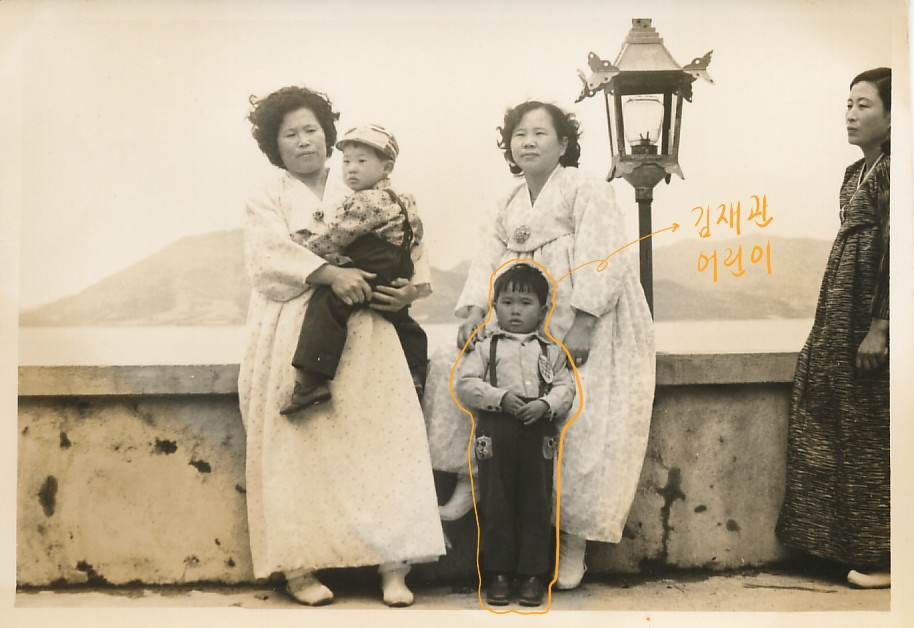
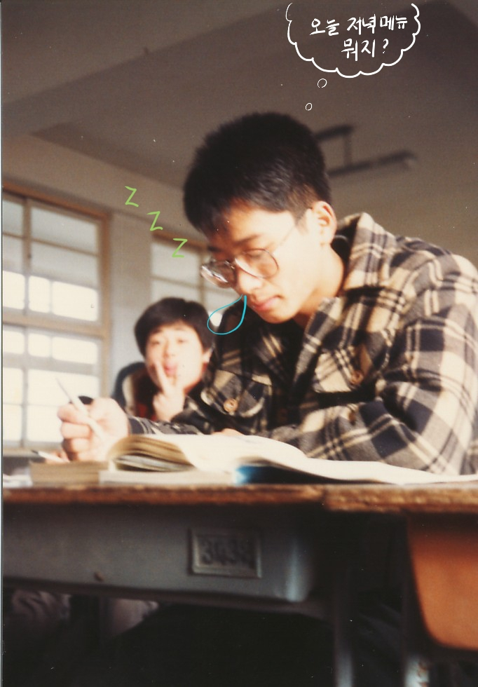

2. 재관의 유년 시절

재관은 4형제의 막내로 태어났다. 나이차이가 적지 않은 형들 사이에서 그는 2층 집에서 떨어지거나 셋째 형이 뿌린 흙이 눈에 들어가는 등재관이 이 일 때문에 시력이 안 좋아진 것 같다고 말하자 재관의 어린 아들은 매우 흥분했었다 다사다난한 유년 시절을 꿋꿋이 버티며 청소년으로 자라났다.
재관은 학생 때부터 범상치 않은 모습을 보였는데, 친구와 쌓여있는 병 사이다를 들고 달아나거나 어떤 집 벽 너머에 달린 무화과를 몰래 따먹다가 그 집 딸들에게 걸리는 일도 있었다이 무화과가 어떤 역할을 했는지는 곧 드러난다.
재관의 강직한(?) 성격을 빼닮은 필자로서는 용납할 수 없는, 그때 그 시절 어린 나이였으니 가능했던 행동이다. 한편으로는 재관은 어머니가 등굣길에 배 꺼지지 말라고 손수 싸 주신 삶은 달걀을 까먹는 소년다운 모습을 보이기도 했다.

재관은 목포홍일고등학교 재학 시절 이공계열을 택했다. 수학에 두각을 보였기 때문이다. 솔직히 말하면 재관이 수학에 두각을 보였을 거라는 바로 앞의 문장은 추측인데, 근거가 없지는 않다. 과거 필자가 초등학생이던 시절 학습지를 풀다 정말로 해결 방법을 모르겠는 문제를 물어본 적이 있었는데 아직 배우지 않은 개념까지 사용하며 설명해주었던 적이 있기 때문이다.그때 어린 필자는 '아빠가 정말 똑똑하구나'라고 생각했다.
사회에 크나큰 변혁이 있었던 1987년, 고등학교 3학년 재관은 학력고사를 친 뒤 전라북도 익산에 위치한 원광대학교 건축학과에 어렵지 않게 입학하였다. 그렇게, 그의 대학 생활이 시작되었다.